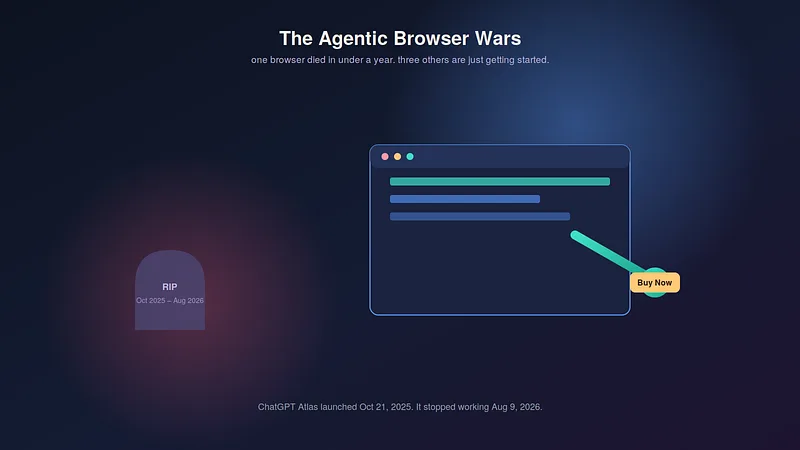
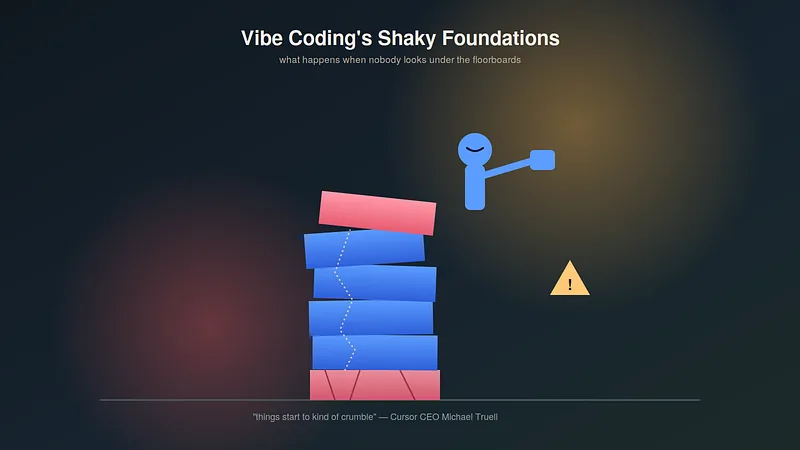
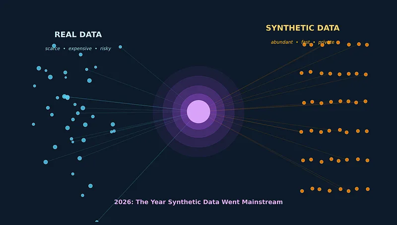
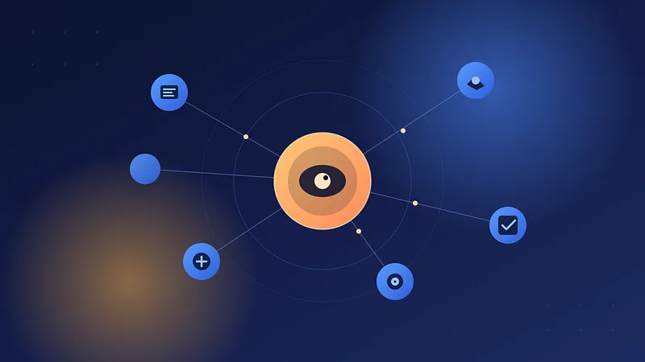

12 articles match your selection.
The Hidden Cost of Broken Hiring — And How AI Startups Are Fixing It
Every year, companies spend billions of dollars trying to hire the right people — and still get it wrong. The average corporate job opening receives hundreds of applications, most of which a human…
The Rise of AI Startups: Why Everyone Is Talking About Them
Artificial Intelligence (AI) is no longer just a buzzword. It has become one of the biggest business trends of this decade. Every week, new AI startups are launching, raising funding, and trying to…

Artificial IntelligenceThe Agentic Browser Wars: Why ChatGPT’s Browser Died in Under a Year While Others Are Just Getting…
On October 21, 2025, OpenAI launched a dedicated web browser called ChatGPT Atlas, built around a bold idea: what if the browser itself could think for you? Less than ten months later, on August 9,…
 Artificial Intelligence
Artificial IntelligenceWorld Models: The Quiet Race to Build AI That Understands Reality, Not Just Language
While most of the public conversation about generative AI has been about chatbots and image generators, a different race has been building quietly in research labs — one aimed at something more…
 Research
ResearchBRICS: Why India’s bet on practical ties matters
Prime Minister Narendra Modi addresses the open session of the BRICS Summit 2026, in New…
 Technology
TechnologyContext Engineering: The Skill That Quietly Replaced Prompt Engineering
In 2023, “prompt engineer” was being called one of the hottest new job titles of the decade. By mid-2025, the term was already starting to feel dated — not because prompting stopped mattering, but…

TechnologyVibe Coding’s Shaky Foundations: What Cursor’s CEO Just Warned Every Developer About
The CEO of one of the fastest-growing AI coding startups on the planet just told a room full of developers: be careful with the thing that made you…
 Artificial Intelligence
Artificial IntelligenceCognitive Debt: The Real Price You Pay Every Time You Let AI Think For You
There’s a number that should worry you more than any AI benchmark: zero. That’s roughly how much mental effort it takes to get a decent-looking essay, summary, or answer out of a chatbot today. No…

Data ScienceWhy Data Scientists Are Quietly Switching to Synthetic Data in 2026
For most of the last decade, data scientists lived by one rule: real data beats fake data, always. In 2026, that rule is breaking down. Across fraud detection, healthcare, and customer analytics,…

Artificial IntelligenceAI Agents: The Shift From Chatbots to Autonomous Digital Workers
Over the past couple of years, the word attached most often to “AI” has been “agent.” In 2023–24, most of us were simply asking chatbots questions and getting answers back. By 2026, those same…
Understanding AI Agents: What They Are and Why Businesses Are Adopting Them
A published perspective by Soumi Ganguly. Read the complete article for the argument, research and references.
India-Bangladesh ties need a strategic reset
A published perspective by Soumi Ganguly. Read the complete article for the argument, research and references.